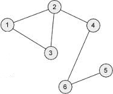

<!DOCTYPE html>
<html lang="en">
  <head>
    <meta charset="utf-8">
    <title>Programming Made Fun</title>
   
<meta name="viewport" content="width=device-width, initial-scale=1.0">
<!-- Bootstrap -->
<link href="css/bootstrap.min.css" rel="stylesheet" media="screen">
<link href="css/bootstrap-responsive.min.css" rel="stylesheet" media="screen">
  </head>

  <body>
<div class="container-fluid">
<div class="row-fluid">
  <div class="span4 offset4" >
<div class="page-header">
  <h2>Programming Made Fun</h1>
</div>
    </div>
  <div class="span8 offset2">
    <div class="row-fluid">
    <div class="navbar navbar-inverse">
    <div class="navbar-inner">
    <a href="index.html"></a>
    <ul class="nav">
    <li><a href="file:///F|/sites/portal/index.html">Trees</a></li>
   <li><a href="file:///F|/sites/portal/graph.html">Graphs</a></li>
    <li>
      <a href="file:///F|/sites/portal/sorting.html">Sorting</a></li>

    </ul>
    </div>
    </div>
     <div class="tabbable tabs-left">
  <div class="tab-content">
    <div class="tab-pane active" id="tab2">
      
     <h3>Topological sort</h3>
        <hr></hr><div class="well">
      <pre class="brush: cpp;title: ; notranslate" title="">
<h4>Algorithm</h4>We do a DFS traversal of the given graph. For every visited vertex ‘v’, if there is an adjacent ‘u’ such that u is already visited and u is not parent of v, then there is a cycle in graph. If we don’t find such an adjacent for any vertex, we say that there is no cycle. The assumption of this approach is that there are no parallel edges between any two vertices.
For example in the below graph

There is a cycle 1-2-3.
 </pre>
       </div>
       <div class="well"> 
      <pre class="brush: cpp;title: ; notranslate" title="">
<h4>Source Code</h4>#include &lt;bits/stdc++.h &gt;
using namespace std;
int c=1,u=0;
vector<int> v2,v3;
struct node{
    int x;
    int val;
    node *next1;
};
//funtion to create a directed graph using adjaceny list

    void addedge(node a[],int src,int dest)
{

    node *ptr=new node();
    node *head=a[src].next1;
    ptr->x=dest;
    a[src].next1=ptr;
    ptr->next1=head;

}
//function that checks whether thhere is an edge emerging from vertex numbered 'r'(actuaaly it is a way to apply topsort by using dfs method).
void checkedge(node a[],int r)
{
    node *ptr=a[r].next1;
        while(ptr!=NULL)
        {
       if(a[ptr->x].val==0)
       {
           a[ptr->x].val=1;
        checkedge(a,ptr->x);
        cout<<ptr->x<<endl;

       }
       ptr=ptr->next1;
        }
}
//funtion to print the graph.
void print(node a[],int v)
{
    for(int i=0;i<v;i++)
    {
        cout<<a[i].x<<"("<<a[i].val<<")"<<"\t";
        node *ptr1=a[i].next1;
        while(ptr1!=NULL)
        {
            cout<<"-"<<"\t"<<ptr1->x<<"\t";
            ptr1=ptr1->next1;
        }
        cout<<"\n";
    }
}
//Driver program to apply above functions.
main()
{
    int v,m,k,y,d=0;
    cout<<"enter no. of vertices";
    cin>>v;
    //here take v according to the vertices given below.It is 6 here

  node graph[v];
  //cout<<"enter values of graph starting from 0"<<"\t";
    for(int i=0;i<v;i++)
    {
        graph[i].val=0;
        graph[i].x=i;
        graph[i].next1=NULL;
    }
//use any of the given below to create an edge
    /*while(cin.get()!='\n')
    {
        cin>>m>>k;
        addedge(graph,m,k);
    }*/
    //or
 addedge(graph,0,2);
 addedge(graph,0,5);
 addedge(graph,1,2);
 addedge(graph,1,3);
 addedge(graph,2,4);
 addedge(graph,2,5);
 addedge(graph,3,4);
 for(int i=0;i<v;i++)
{
    if(graph[i].val==0)
    {
        graph[i].val=1;
        checkedge(graph,i);
        cout<<i<<endl;
    }
    else
        continue;
}
return 0;
}


</pre>


    </div>
    
  </div>
    </div>
  </div>
</div>

    <!-- Placed at the end of the document so the pages load faster -->
<script src="js/jquery.js"></script>
<script src="js/bootstrap.min.js"></script>


  </body>
</html>
